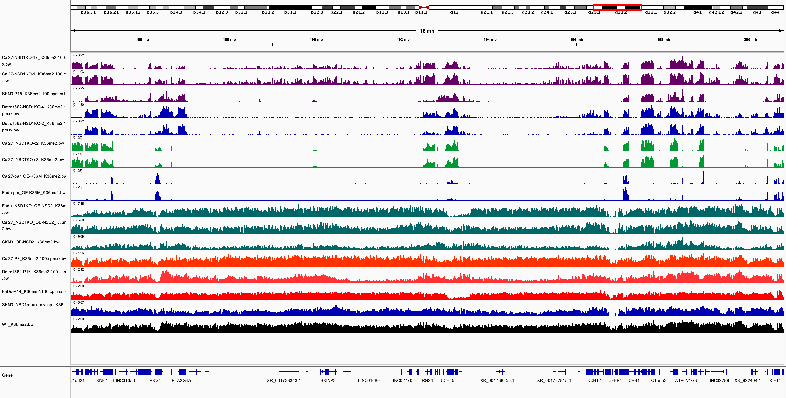
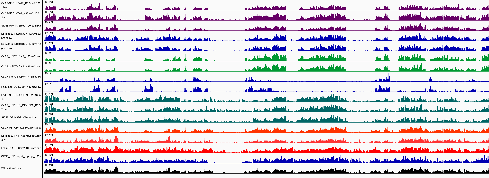
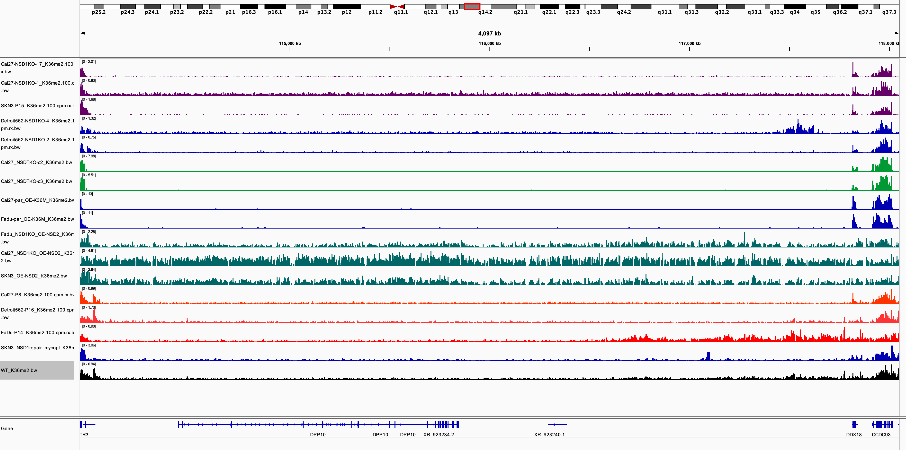
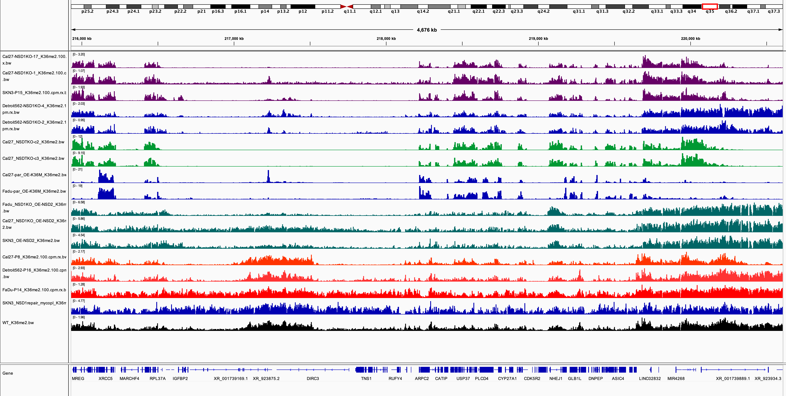

| Dir |
|---|
| /lustre03/project/6007495/fh4132/projects/HNSCC/chipseq/MAJ1301/out |
| /lustre03/project/6007495/fh4132/projects/HNSCC/chipseq/hg38/bw2 |

However, it seems NSD2-OE also causes spreading of K36me2 into regions that normally has lower levels of K36me2 in parental and WT.


In other instances, NSD2-OE does not seem to restore K36me2 to the level of parental/WT.
